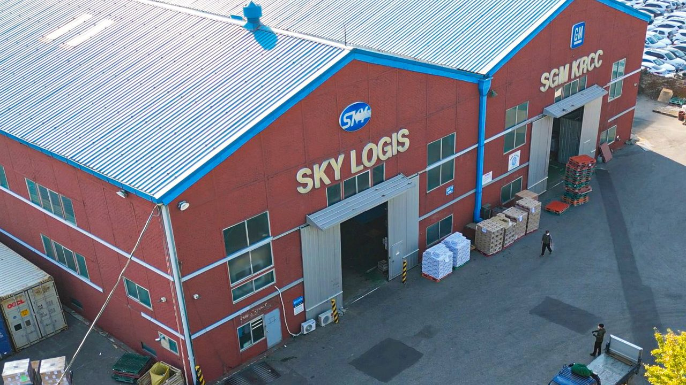
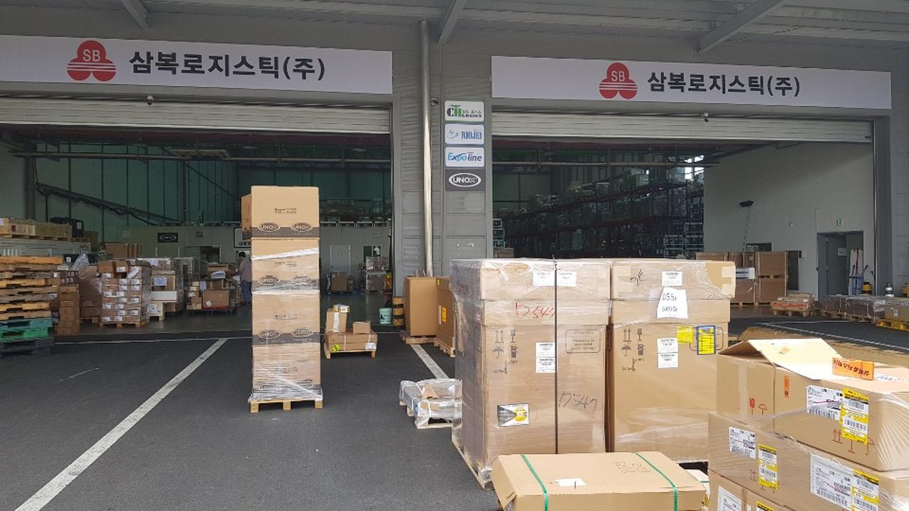

China
在中国装货，在韩国收尾。全程不更换承运方。
HF LOGIS · LCL拼箱仓库
海埠路56号 泛杰产业园 B3-5
将多家出口商的货物拼装入同一集装箱后发运，小批量货物同样能赶上定期班期。
NOVA HF · 跨境电商转运仓
海埠路56号 泛杰产业园 B3-1
在当地接收卖家与平台订单，验货后拼箱发运，并直接对接跨境电商专用通关。
Korea
急件送往机场自由贸易区仓库，重货与大批量货物进入仁川港保税仓库。可根据货物性质同时调整时效与成本。

仁川广域市中区筑港大路202号
电话 +82-32-765-4715~7

仁川广域市中区机场洞路296号街171，AMB仁川物流中心 F1-1
电话 +82-70-5066-3352
Fleet
以合作方三福物流的保有量为准。包含冷藏冷冻车与无振动车，按货物特性调配。
| 吨位 Class | 普通 | 冷藏 · 冷冻 | 尾板 | 无振动 | 合计 |
|---|---|---|---|---|---|
| 1t | 11 | 8 | 5 | — | 24 |
| 3.5t | — | 3 | 3 | — | 6 |
| 5t | 6 | 10 | — | 2 | 18 |
| 11t | 15 | 9 | — | 5 | 29 |
Last Mile · 快递渠道
Heavy Cargo · 重件
One Operator
从中国集货到韩国入库、通关、整理作业及境内配送，由一家公司连贯处理。